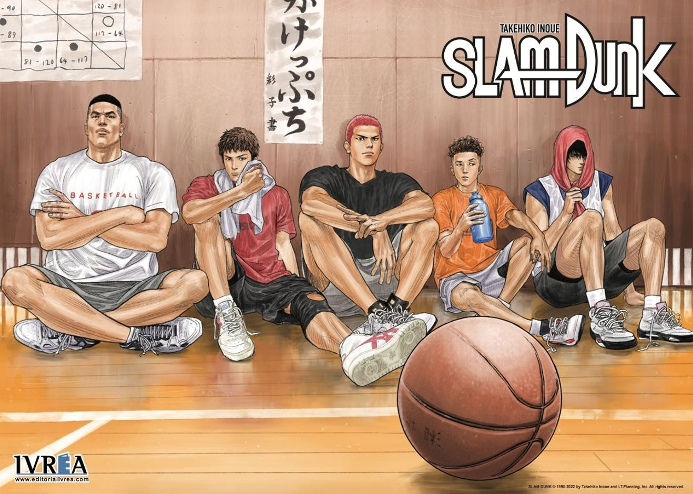

SLAM DUNK
Hoy vamos a hablar del que hasta 2004 fue el manga más vendido en la historia (gracias a sus números 23 y 24) y de una de las series más queridas en Japón.
Para algunos no necesita presentación, para los que sí, estamos hablando de Slam Dunk, obra de ese artista insuperable que es Takehiko Inoue, la cual fue publicada entre los años 1990 y 1996 en la revista Shonem Jump.
Slam Dunk (スラム ダンク) es un manga en clave de humor que nos cuenta la historia de Hanamichi Sakuragi, un chaval (mas bien un macarra) de la preparatoria el cual ostenta el dudoso record de 50 rechazos amorosos seguidos. Lleva siempre el pelo teñido de rojo y va con un grupo de amigos los cuales no hacen más que reírse de sus desgracias amorosas, hasta que un buen día, Sakuragi conoce a Haruko Akagi, por la que quedará totalmente enamorado. Haruko le pregunta que si le gusta el baloncesto, ya que debido a su altura a simple vista parece tener muy buenas aptitudes para el deporte.
Sakuragi fingirá ser un deportista (o un Basketman como el mismo se autodenomina) y se inscribirá en el equipo de baloncesto del colegio con la esperanza de poder impresionarla y salir con ella. Pero las cosas no van a ser tan fáciles para Sakuragi después de todo.
A lo largo de los 31 tomos que forman la serie, vemos cómo el único objetivo del equipo es conquistar el torneo nacional, en el cual deberán enfrentarse a los mejores equipos de todo Japón. Esta es la última oportunidad para gente como Akagi o Kogure, los cuales están en su último año de instituto y se retirarán una vez terminado el actual campeonato.
TAKENORI AKAGI
Capitán del equipo de baloncesto del instituto Shohoku, en el manga se nos presenta en su último año en el equipo, ya que después deberá ingresar en la universidad y se retirará del baloncesto. De carácter estricto es un líder excepcional dentro y fuera de la pista, donde se lleva más de un disgusto debido a la panda de macarras que tiene por compañeros de juego. Guarda más relación con Mitsui, al que conoce desde hace más tiempo, pero su mejor amigo es Kogure. Sakuragi le bautizó con el mote que lo hace famoso: El Gorila.
HANAMICHI SAKURAGI
Genio Basket Man, Rey del baloncesto, Héroe del Shohoku o Rey de los rebotes son alguno de los títulos que el protagonista de la serie se otorga personalmente. Macarra y bruto donde los haya, comienza la serie sin saber lo que es un tiro libre y termina siendo imprescindible para el equipo, le guste reconocerlo a Akagi o no. Está enamorado de la hermana del capitán, Haruko, la cual se siente atraída por Rukawa al cual odia a muerte.
KAEDE RUKAWA
El genio del equipo con mayúsculas, juega al baloncesto desde que era niño y tiene una habilidad fuera de lo común. Juega de alero y es el gran rival de Sakuragi, al menos para este último. Sakuragi le apoda Zorro Dormilón, por una de sus características más llamativas, a saber, que se queda dormido con una facilidad pasmosa. Al principio era más indidualista, pero luego saca mucho partido de su habilidad para los pases.
HISASHI MITSUI
El último miembro del grupo en regresar al equipo, estuvo fuera por lesión durante mucho tiempo, en el cual se echó a perder con malas compañías y malos hábitos. Un auténtico genio de los triples, con un promedio altisimo de efectividad durante toda la serie, pero que no puede explotar del todo debido a esos años que pasó sin entrenar. Tuvo un altercado con Miyagi en el que perdió varios dientes.
RYOTA MIYAGI
Es el base del equipo y el que recupera más balones en los partidos, estando considerado como uno de los mejores bases de la prefectura de Kanagawa. Está profundamente enamorado de Ayako, la manager del equipo del instituto Shohoku. Al igual que Sakuragi es un auténtico macarra y es constantemente rechazado por la chica de la que está enamorado, lo que hace que hagan buenas migas durante la serie.